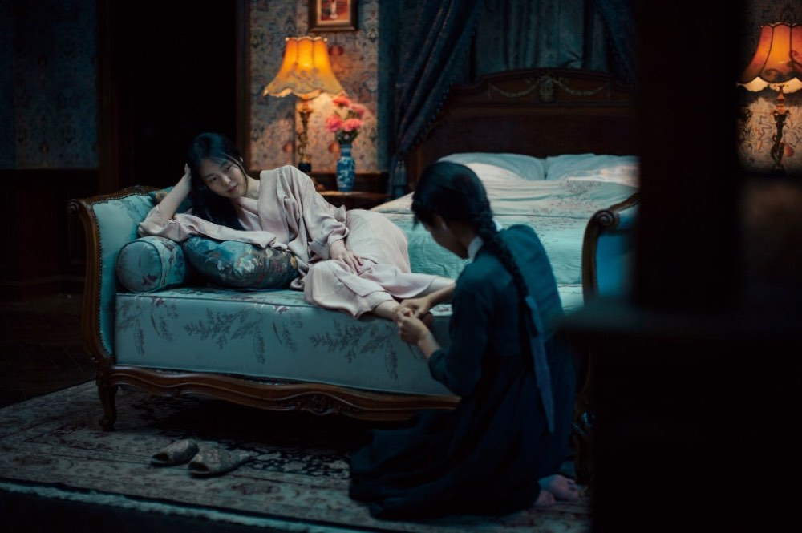
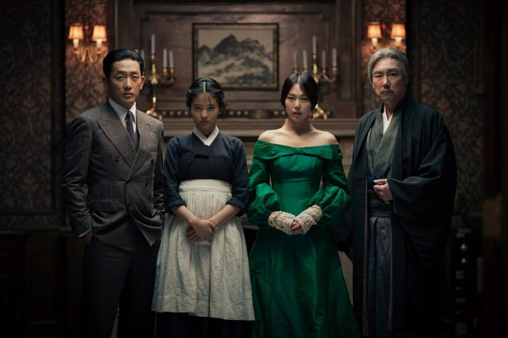
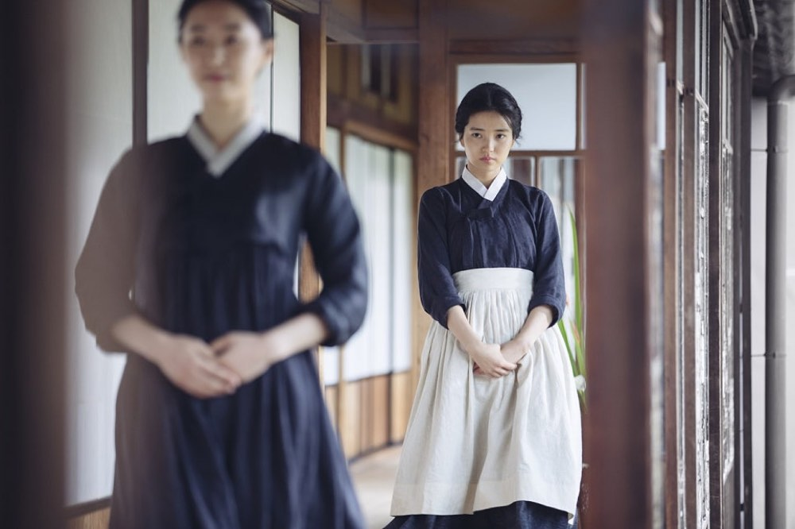
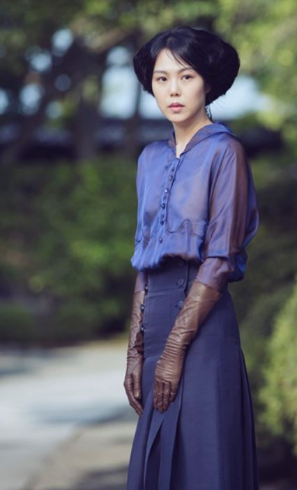
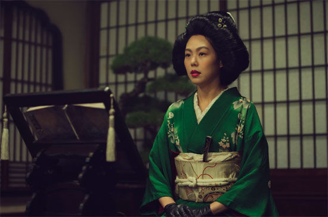
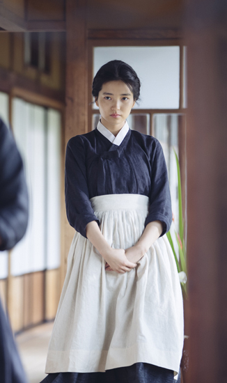

STILL
IN
TEAL.
TEAL
#174552침구와 의상을 잇는 청록. 넓은 어둠 속에서 서늘하고 고요한 인상을 만듭니다.
아가씨 · 2016 · 박찬욱 감독
의상과 공간, 빛에 담긴 색.
익숙한 장면을 다른 시선으로 바라봅니다.
THE HANDMAIDEN
A PERSONAL COLOR ARCHIVE



장면 아래의 색상과 해석을 함께 읽어보세요.
침구와 의상을 잇는 청록. 넓은 어둠 속에서 서늘하고 고요한 인상을 만듭니다.

보랏빛 의상과 정원의 녹색이 구별됩니다. 차가운 색의 조합을 차분하고 낯선 분위기로 읽을 수 있습니다.
선명한 진홍색 의상은 어두운 목재와 강한 대비를 이룹니다. 이 색의 집중을 장면의 시각적 긴장으로 해석했습니다.
절제된 주변색 사이에서 녹색 드레스가 두드러지며 인물에게 시선을 모읍니다.
앞치마와 창가의 아이보리. 어두운 남색 의상 옆에서 빛과 실루엣을 드러냅니다.
같은 빨강 계열도 산호빛으로 옅어지면 부드럽게 읽힙니다. 주변의 녹색과 피부색이 인상을 함께 바꿉니다.
색을 보고, 관계를 읽다.
TEAL · #174552
침실을 채우는 청록.
따뜻한 조명과 대비되며 서늘하고 고요한 분위기를 만듭니다.

EMERALD · #005C43
어둠 속에서 선명해지는 녹색.
절제된 주변색 사이에서 의상의 채도가 인물에게 시선을 모읍니다.
PURPLE · #605786
보랏빛 의상이 만드는 차가운 거리감.
정원의 녹색 배경과 구별되며 인물의 차분하고 낯선 인상을 강조합니다.

IVORY · #E3E4D8
밝은 복도와 아이보리 앞치마.
남색 의상과의 명도 차이로 빛과 실루엣이 드러납니다.
RED · #B20D32
선명한 진홍색은 어두운 목재와 대비되어 시각적 긴장을 만듭니다.
산호빛 빨강은 더 부드럽게 읽힙니다. 감정의 의미는 장면에 대한 개인 해석입니다.
다섯 가지 대표색. 빨강은 진홍색을 기준으로 두 장면의 차이를 비교합니다.
#174552
#005C43
#605786
#E3E4D8
#B20D32